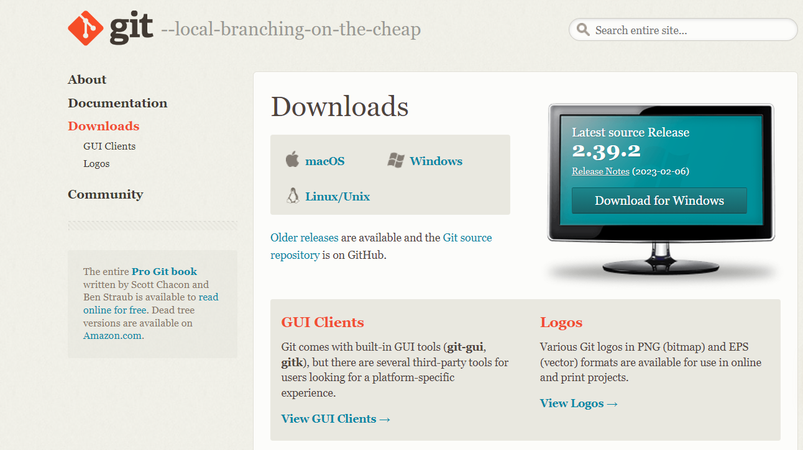
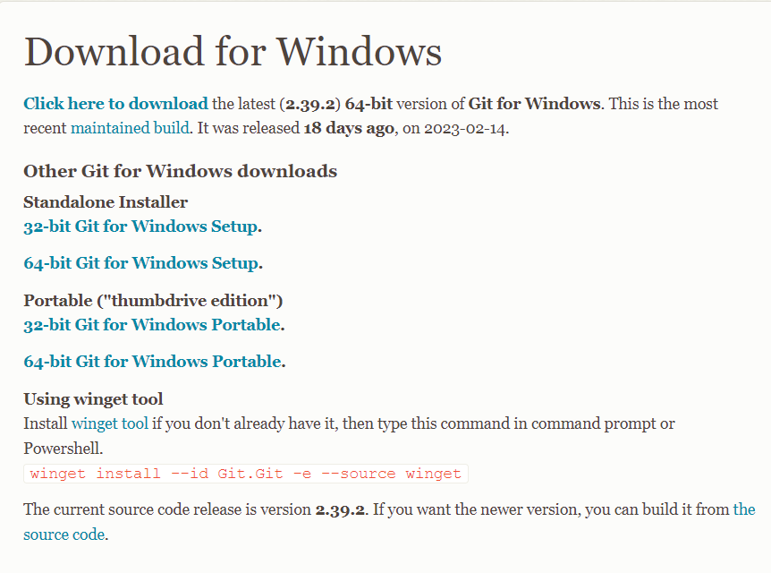
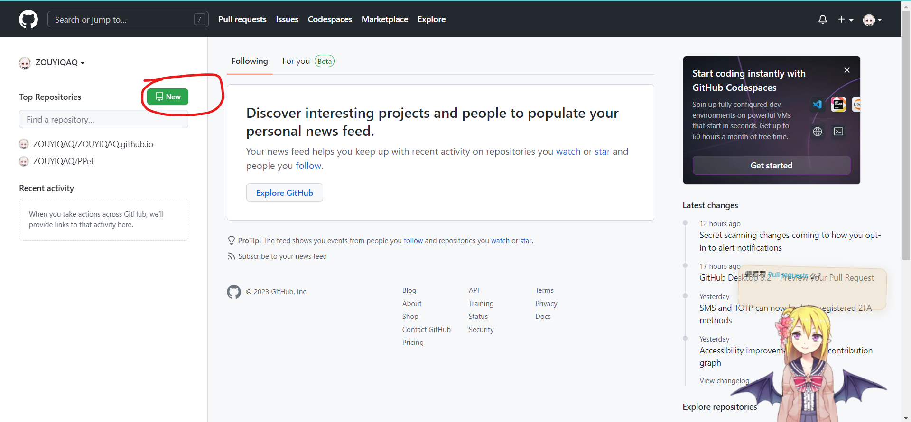
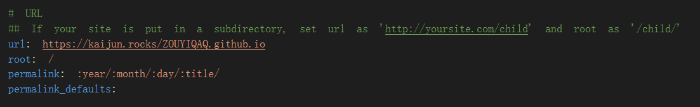

Hexo博客的搭建与推送
前言
首先，需要阅读这篇文章，简单易懂，十分详细。本文也是对这篇文章的补充与部分更改，因这篇文章的创作时间为2018年，距今已过太久，难免会有些东西在其中过时。于是便有了这篇博客，需要注意的是，这篇博客并不是完全从零开始的新手教学，而是对这篇文章的补充与更改，所以请务必先阅读这篇文章。
另外，下文中所有的操作均在win10系统下操作，不涉及到其他系统的教学。
方便起见，这篇文章：这篇文章在下文中统称原文。
入门部分
安装git
随着时间变化，原文的git安装部分可以说是完全变了个样，下面是具体的变化和补充。
选择版本和安装
点开原文中的Git 官网下载地址，可以看到以下界面：

选择对应的操作系统后能看到以下界面：

在其中，“click here to download”是下载最新版本的独立安装程序；“Standalone Installer”是独立安装程序；“Portable (“thumbdrive edition”)”是免安装绿色版本。选择自己中意的安装就好。这几种模式均具有我们搭建博客需要的所有功能，唯一的区别是独立安装版在安装后会在鼠标右键添加 Git GUI Here 和 Git Bash Here 两个选项，而免安装版则没有。只能通过解压后的git-bash.exe或git-cmd.exe运行。
具体原因未知，我在安装独立安装版本时，电脑发生了蓝屏的情况，万幸的是电脑没有丢失任何数据，这一点需要注意。
对于独立安装包可以参考这个教程，超详细 Git 安装教程
免安装版实际上是一个压缩文件，按照提示解压即可。
部署至Github Pages
Github的界面与几年前有了些改动，对于我这种第一次创建库的人来说，这一点小小的改动简直要了我的命。创建代码库的位置在主页的这里：

同时，在创建代码库时，界面也稍有改动，只是原文中需要打勾的地方没了而已。
更换主题
更新后推送至Github Pages
这一步是我耗时最长的一步，主要原因是我的配置文件设置( _config.yml)错误。
在我推送网页至Github Pages后打开发现页面可以打开，但图片和css样式却全部消失。搜索后发现可能的原因有
js错误
图片和css文件位置错误
相对路径写成了绝对路径
但我却发现上面三条的配置都没有问题，在纠结了好一阵后还是靠着cahtgpt才明白了来龙去脉。原因是配置文件中的这里写错了：

对于这里，有几个个十分重要的点：
对于url，最后的斜杠后要接上的是你的项目的名称，前面的只要能正常显示就不用管。
对于root，它代表的根目录，在更改之前，我的root为“\ZOUYIQAQ.github.io\”，而这显然是错误的，在我的文件中，文件定位从根目录开始，而不是“ZOUYIQAQ.github.io\”。
所以对于在本地显示正常，但在线上就出现问题的情况就可以考虑这样做：
- 首先，确定自己的文件使用的是相对路径还是绝对路径
- 然后，检查文件是否在路径应有的位置。
- 最后，更改文件或配置文件。
配置个性域名
这里没什么问题，只要按着原文来做就好。只是有一点需要注意，在配置完域名解析后，需要十几二十分钟的时间来生效，如果没反应的话可以等等看。
网站加速和安全性
好了现在网站是配置完了，其他人也能看到了，但是如果现在打开网站看看，就会发现两问题。
- 网站显示不安全，因为使用的协议为http协议，而非https协议。
- 网站加载过慢，随便一张图片就需要好久才能加载出来。
为了解决这两问题，我们需要修改默认的DNS服务器。这里有腾讯和cloudflare两家。推荐使用cloudflare的域名解析服务。在速度上和腾讯相差不大，更重要的是，它提供免费的服务，能将http转为https。这样一来，浏览器就不会再显示“不安全”的警告了。
关于教程，推荐这一篇。
独立站速度优化之Cloudflare CDN - 知乎 (zhihu.com)
值得一提的是，这并不是立即生效的，需要一定的时间。即便在cloudflare上显示已经生效也是如此。